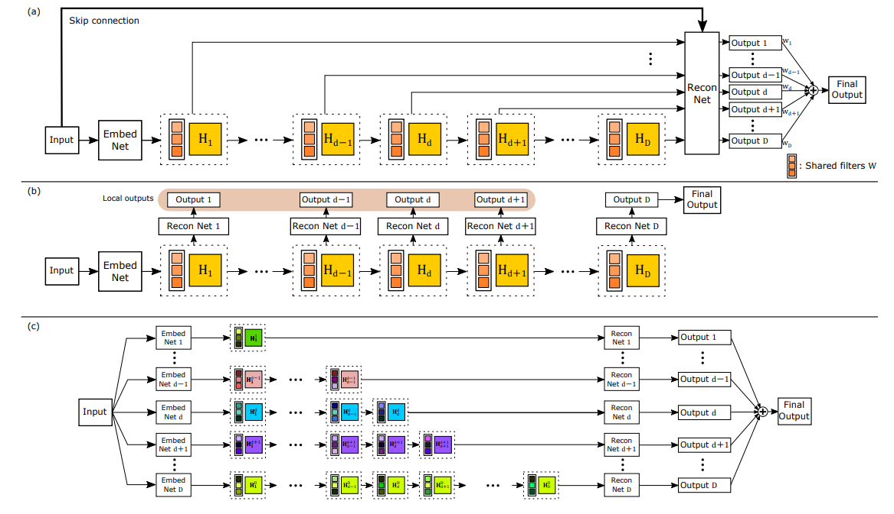
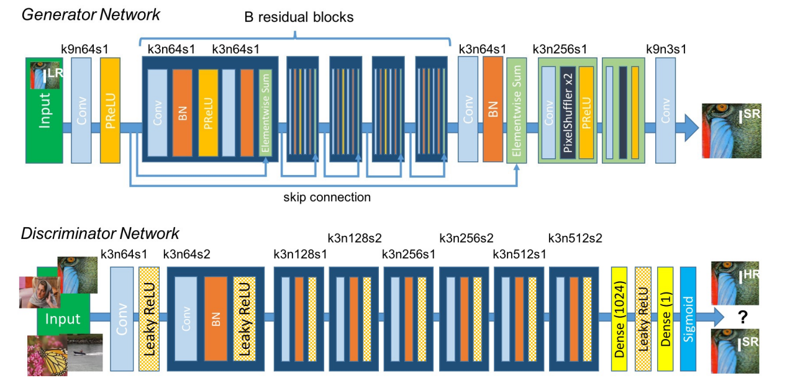
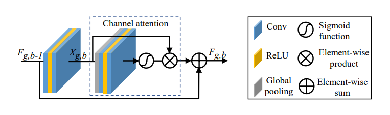
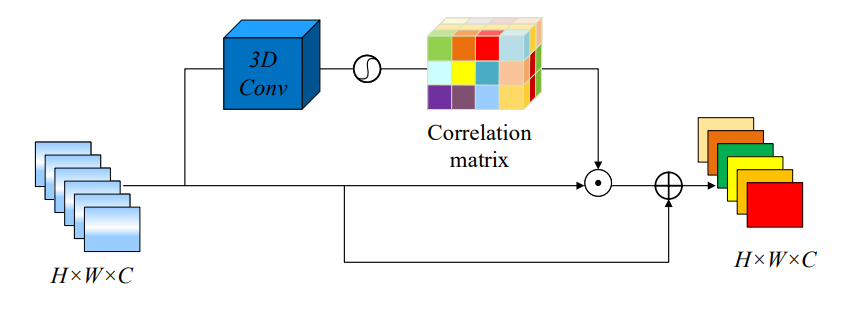
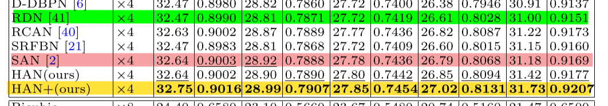
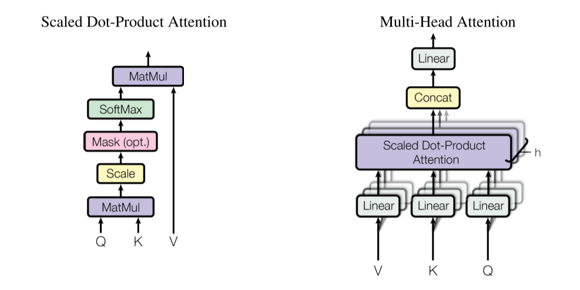

SR 发展史 Review 汇报
1. 基于 AlexNet 的 SR 模型
1.1. Image super-resolution using deep convolutional networks (SRCNN, 2015)

- 利用卷积实现 SR
| Implementation | Framework | Understandable |
|---|---|---|
| SRCNN-pytorch | Pytorch | ✅ |
2. 基于 VGG 的 SR 模型
2.1. VGG 简介

- 更小的卷积核和更深的网络
2.2. Accelerating the super-resolution convolutional neural network (FSRCNN, 2016)

Conv(f, n, c): kernel size, kernel number (output channel), kernel channel
- 更小的计算代价和更好的结果
- 替换 SRCNN 中的 Non-Linear Mapping
| Implementation | Framework | Understandable |
|---|---|---|
| FSRCNN-pytorch | Pytorch | ✅ |
3. 基于 ResNet 的 SR 模型
3.1. RestNet 简介

3.2. Accurate Image Super-Resolution Using Very Deep Convolutional Networks (VDSR, 2016)

- CNN + ResNet
3.3. Deeply-Recursive Convolutional Network for Image Super-Resolution (DRCN, 2016)


- 对比发现模型 (a) 效果最好
- (a) 中每次递归的输出和最初的输入会被一同放入识别网络, 形成 ResNet 结构
| Implementation | Framework | Understandable |
|---|---|---|
| super_resolutiondeeply-recursive-cnn-tf | TensorFlow | ❎ |
3.4. Photo-Realistic Single Image Super-Resolution Using a Generative Adversarial Network (SRResNet, 2017)

- GAN + ResNet
| Implementation | Framework | Understandable |
|---|---|---|
| pytorch-SRResNet | Pytorch | ✅ |
| ESRGAN | Pytorch | ✅ |
4. 基于 DenseNet 的 SR 模型
Densnet 的稠密连接方式可以使得每一层都可以利用之前学习到的所有特征.
4.1. Residual Dense Network for Image Super-Resolution (RDN, 2018)

- ResNet 做的是 "add", 而 DenseNet 做的是 "concat"
- 每层输入来自前层的输出?
- 效果相比 ResNet 更好
5. 基于 Channel Attention 和 Non-Local Attention 的 SR 模型
5.1. 什么是 Channel Attention
源自: Squeeze-and-Excitation Networks (SENet, 2017)

- 卷积操作 (卷积核) 本身的感受有限
- 因此希望寻找同一通道的特征
Input: .
Step 1: Transformation
is a conv operator maps to feature map .
Step 2: Squeeze
Step 3: Excitation
is a FC layer, map to .
And finally:
5.2. Image Super-Resolution Using Very Deep Residual Channel Attention Networks (RCAN, 2018)

Archetecture of RCAN

Channel attention (CA)

Residual channel attention block (RCAB)
- RIR, 残差网络中用残差网络
- 多个 skip connection
- Channel Attention
| Implementation | Framework | Understandable |
|---|---|---|
| RCAN | Pytorch | ✅ |
5.3. 什么是 Non-Local Attention

- 同样为了解决卷积核视野小的问题
- 计算复杂度高
将 Non-Local 定义为 Residual Block 可以直接插入模型中;
还提出了矩阵运算的加速方法:

Optimization, oc is output channels.
5.4. Second-order Attention Network for Single Image Super-Resolution (SAN, 2019)

- 用 SOCA 代替 Channel Attention
- 传统 Non-Local 计算量太大, 提出 Region-Level Non-Local
与 CA 求平均数不同, SOCA 计算了协方差矩阵 (与 EigenFace 类似) 去提取特征间的独立性.
| Implementation | Framework | Understandable |
|---|---|---|
| SAN | Pytorch | ❎ |
5.5 Single Image Super-Resolution via a Holistic Attention Network (HAN, 2020)

HAN

Layer Attention Module

Channel-Spatial Attention Module
- Channel Attention 只提取了同一层的特征, 忽略了不同层之间的特征
- 因此提出 Layer attention module (LAM) 和 channel-spatial attention module (CSAM) 同时提取相同层, 不同通道, 和不同位置的特征
5.5. Attention vs. Dense

Quantitative results with BI degradation model.
6. 基于 Transformer 的 SR 模型
6.1. 什么是 Transformer
- 发现当时主流的 NLP 模型都是复杂递归 / 卷积网络 + Attention 机制
- 因此做减法, 只用 Attention 机制

- Self-Attention 直接得到输入序列间的 Attention 值, 不需要递归求解
- Multi-Head Self-Attention 提取多维特征
- 缺少位置信息, 用 Positional Encoding 处理
- Mask
- Padding Mask: 解决输入长度不一致
- Sequence Mask: 计算 Self-Attetion 时遮挡未来数据, 保留当前时刻 t 之前的数据
| Implementation | Framework | Understandable |
|---|---|---|
| attention-is-all-you-need-pytorch | Pytorch | ✅ |
6.2. ViT 简介
- Transformer 在 NLP 有很好的应用; 在视觉领域, Attenttion 机制多被用于卷积操作的一部分
- 提出使用纯粹的 Transformer 机制进行图像识别, 模型简单效果好, 扩展性强
CNN 的归纳偏置 (Inductive Bias)
- 局部性 (Locality / Two-Dimensional Neighborhood Structure), 即图片上相邻区域有相似特征
- 平移不变性 (Translation Equivariance),, 其中 表示平移操作, 表示平移操作
由于 CNN 具有以上两种归纳偏置, 训练前就有了很多先验信息, 因此需要较少数据就可以学习到一个比较好的模型.
因此, 当训练数据集不够大的时候, ViT 的表现通常比同等大小的 ResNets 要差一些.
作者发现 不管使用哪种位置编码方式, 模型的精度都很接近, 甚至不适用位置编码, 模型的性能损失也没有特别大.
| Implementation | Framework | Understandable |
|---|---|---|
| vit-pytorch | Pytorch | ✅ |
6.3. Swin Transformer 简介


- 问题 1: 图像中的对象 Scale 变化尺度会很大, 相同大小的 Patch 难以准确捕捉信息
- 问题 2: Transformer 计算复杂度太高
- 解决 1: 通过与 CNN 类似的分层结构处理图片, 使模型能灵活处理不同尺度的对象
- 解决 2: 采用 Window Self-Attention, 降低复杂度
- 相对位置编码
- Cyclic Shift => 跨窗口特征提取
- 子窗口编码 + Mask => 计算 Self-Attention
| Implementation | Framework | Understandable |
|---|---|---|
| Swing-Transformer | Pytorch | ❎ |
6.4. Pre-Trained Image Processing Transformer (IPT, 2020)

- ViT
- 看到了 Transformer 在 NLP 的表现力, 应用于 CV 基础问题: 去噪, 超分辨和去雨
- 参数多, 比较难训练
| Implementation | Framework | Understandable |
|---|---|---|
| Pretrained-IPT | Pytorch | ✅ |
6.5. SwinIR: Image Restoration Using Swin Transformer (SwinIR, 2021)

- Swin Transformer + ResNet
6.6 Image super-resolution with non-local sparse attention (NLSA, 2021)

图像超分是一个被研究多年的任务, 作为一个非适定性 (ill-posed) 问题, 往往需要 加入许多图像先验作为正则化, 例如最具有代表性的稀疏, 非局部先验
稀疏性约束在单张图超分 SISR (Singel Image Super-Resolution) 上已被很好地探索, 利用 稀疏编码 (sparse coding), 图像 (图块) 可视作预先定义好的过完备字典, 小波 (wavelet), 曲波 (curvelet) 的稀疏线性组合.
深度学习方法例如 SRCNN 也首先使用卷积实现了稀疏编码 (50%的特征被 ReLU 置为 0).
此外, 非局部的图像先验 (Non-Local, NL) 也被很好地探索. NL 通过 全局搜索相关联的特征进行叠加 来增强图像表征. 不过应用在SISR上时会出现两个问题：
- 在网络深层, 特征的感受野很大甚至是全局性的, 会导致 NL 计算的互相关性不准确.
- NL 需要计算每个点之间的互相关性, 此计算量与图像大小成平方正相关, 为了解决这个问题, 一般会计算局部的相关性, 但这样做又会失去全局的特征。
对此, 本文为 SISR 任务提出一种稀疏的全局注意力模块, 以此大大降低 NL 的计算量, 并将其嵌入例如 EDSR 这样的网络来形成 Non-Local Sparse Network (NLSN).
- 哈希桶 + 超球, 两个向量的角度小更有可能落入同一个哈希桶中
7. 基于 Pre-Trained 和 Transformer 的 SR 模型
7.1. On Efficient Transformer-Based Image Pre-training for Low-Level Vision (EDT, 2022)

- 预训练在不同 low-level 任务中起不同的作用
- 通过探索了不同的预训练方法并证实: 多任务预训练更有效且数据高效
8. 总结
Ref: 桃川京夏
在 2019 年的综述 Deep Learning for Image Super-resolution: A Survey 中, 将图像超分辨率的结构分为以下四种：
- 前端上采样 Pre-upsampling SR
- 后端上采样 Post-upsampling SR
- 渐进式上采样 Progressive upsampling SR
- 升降采样迭代 Iterative up-and-down Sampling SR.
在发展过程中, 后端上采样的结构具有引入噪声少, 速度快的优点, 逐渐成为主流.
目前, 图像超分辨率这一领域已趋于成熟, 不再区分上述四种形式, 基本已经统一为先修复, 再放大的结构, 即后端上采样.
模型基本都遵循相同的定式：浅层特征提取 (head) + 深层特征提取 (body) + 重建模块 (tail).
随着分类模型的推进, 图像超分辨率的改进目前大多都是在以上定式之下, 改进网络的body (CNN / Transformer / MLP).